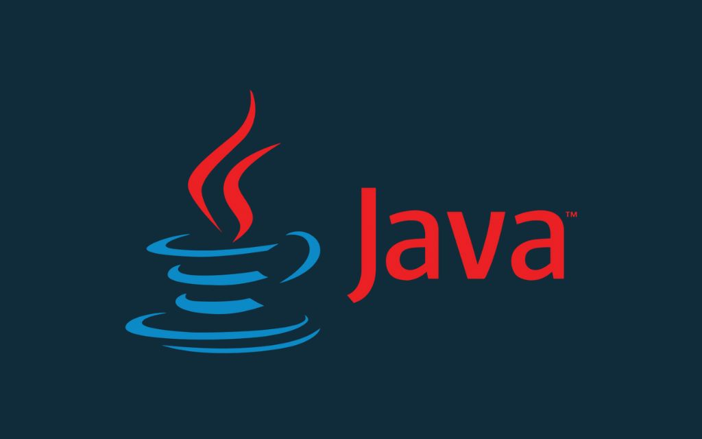
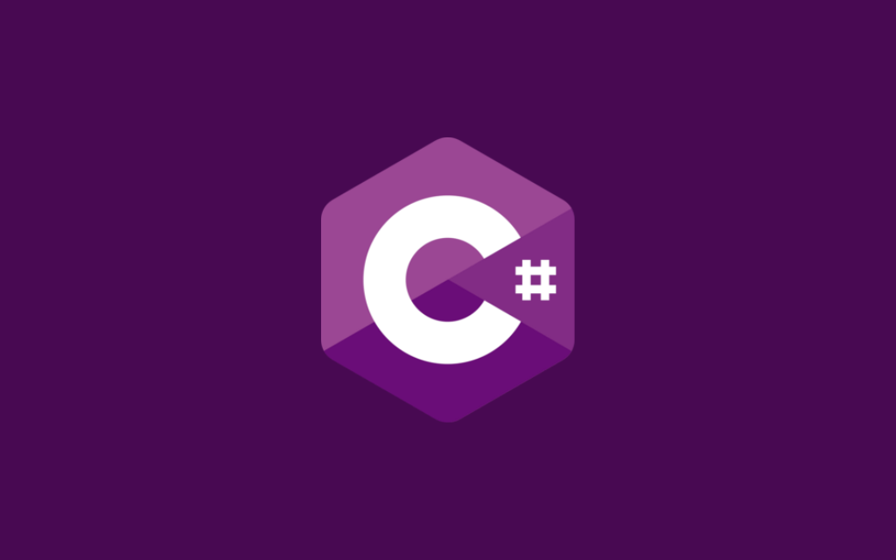

JavaScript
Descubra a poderosa linguagem que revolucionou a web: JavaScript.
Desde sua criação pela Netscape, JavaScript se tornou uma ferramenta indispensável para desenvolvedores. Com sua versatilidade, velocidade e sintaxe acessível, permite criar páginas interativas, aplicativos móveis, sistemas back-end, software para desktop e até mesmo games impressionantes.
Tópicos abordados
- História
- Aplicações
- Popularidade
- Vantagens e Desvantagens da Tecnologia
- Utilização em Empresas
- Média Salarial

Java
Desvende a linguagem poderosa que impulsiona a tecnologia: Java.
Com sua origem no Green Project da Sun Microsystems, Java se tornou a escolha de grandes empresas como IBM e Apple. Explore a versatilidade do Java no desenvolvimento mobile, web, big data, machine learning e até mesmo em eletrodomésticos. Descubra as vantagens de aprender Java, desde sua ampla comunidade de desenvolvedores até a capacidade de executar em qualquer sistema operacional.
Tópicos abordados
- História
- Aplicações
- Popularidade
- Vantagens e Desvantagens da Tecnologia
- Utilização em Empresas
- Média Salarial
Python
Descubra o poder do Python: da ciência de dados à automação de scripts!
Python é uma linguagem de programação de propósito geral amplamente utilizada. Com seu código limpo e modular, é perfeito para iniciantes. Descubra como Python é aplicado em data science, machine learning, desenvolvimento web, automação de scripts e muito mais.
Tópicos abordados
- História
- Aplicações
- Popularidade
- Vantagens e Desvantagens da Tecnologia
- Utilização em Empresas
- Média Salarial

C#
Introdução
Texto do Card